1DAY
員林地區歷史踏查
HISTORIC WALKING TOUR
目的：讓外賓在抵台第一天就認識在地文化與建築，同時給本校學生一個「以英語介紹家鄉」的真實舞台。
做法：由本校學生擔任導覽員，帶領外國學生以步行方式走訪員林。全程佩戴導覽耳機，沿途介紹員林火車站的建築裝飾、周邊古蹟、街道與公園。
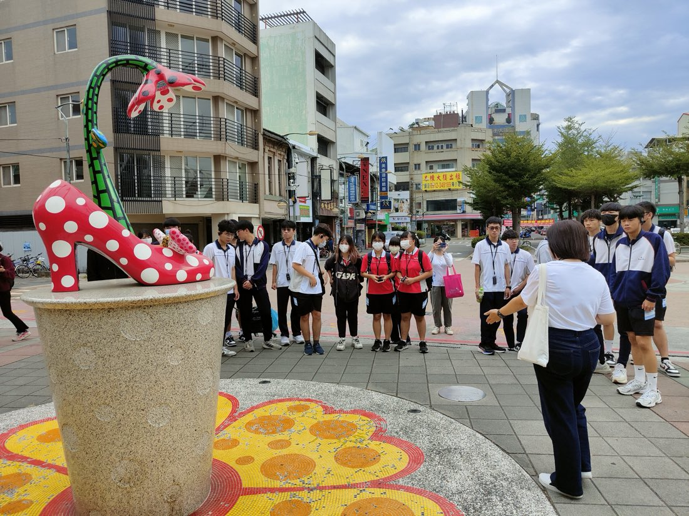
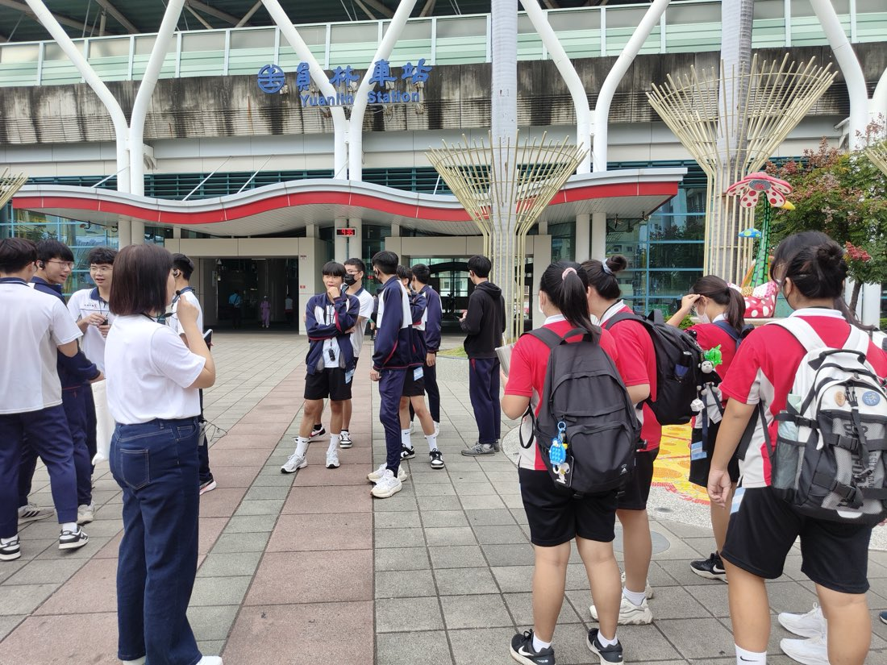
踏查延伸：步行路線也走進員林在地的果菜市場，讓外賓感受最真實的台灣庶民生活與物產；並在特色咖啡館稍作停留、交流休息。街角的日常，往往比景點更讓外國朋友印象深刻。
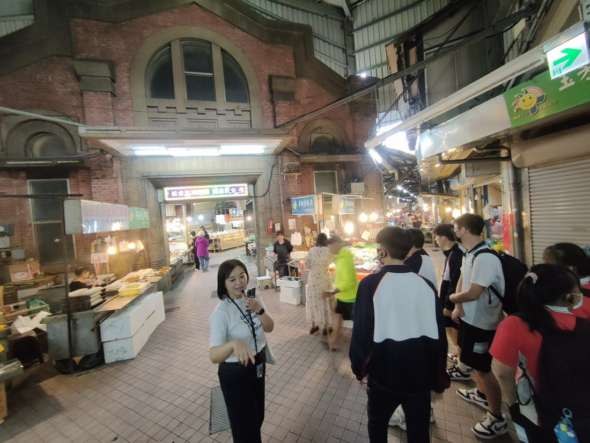
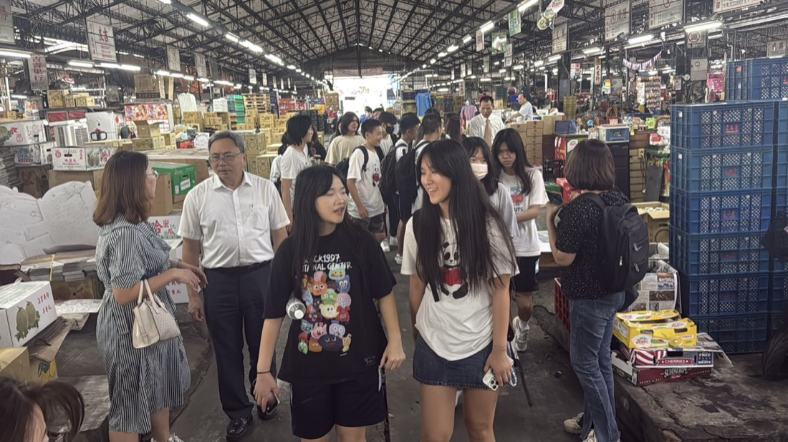
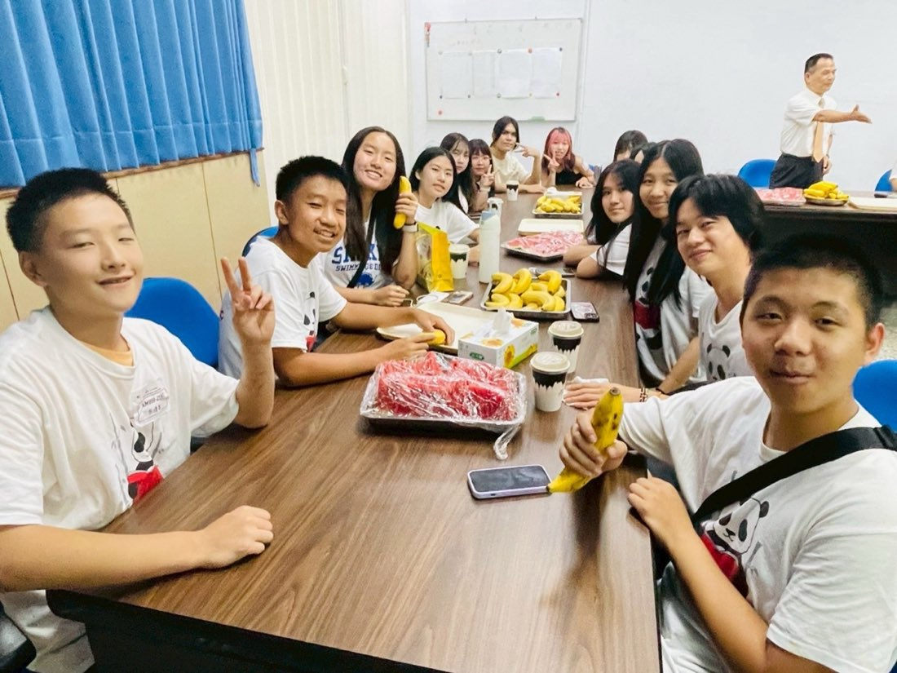
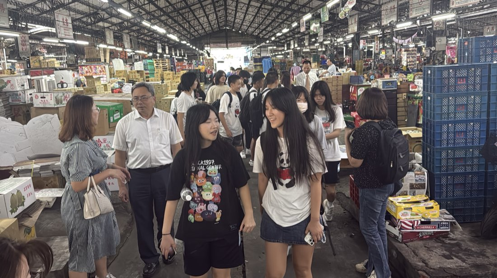

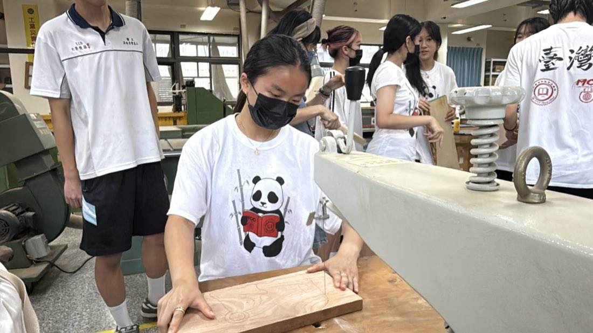
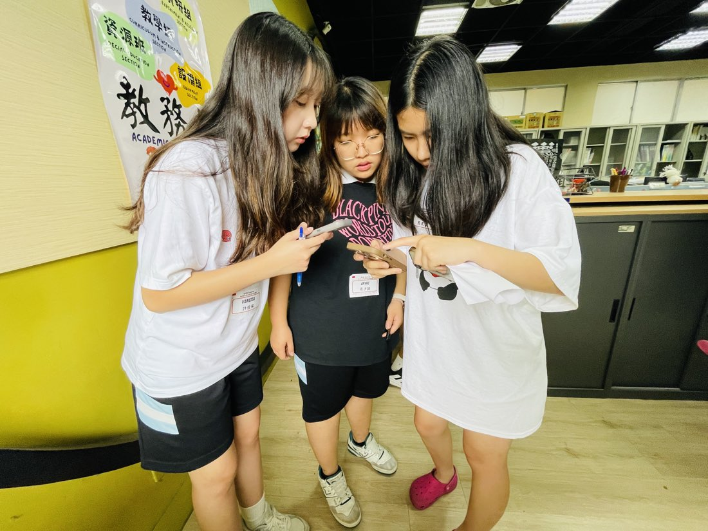
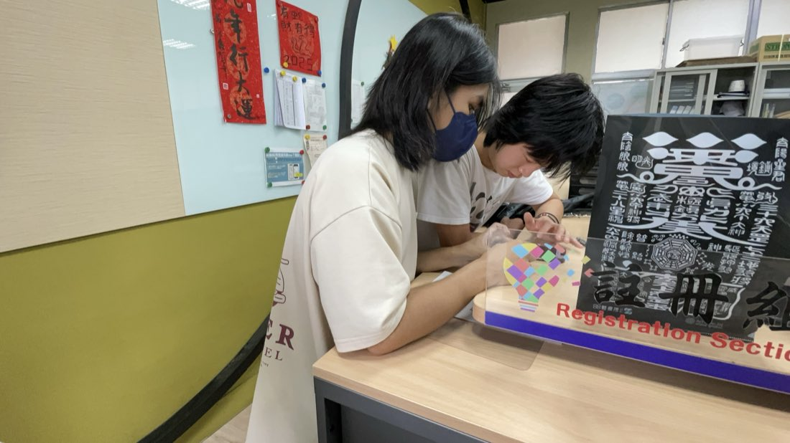
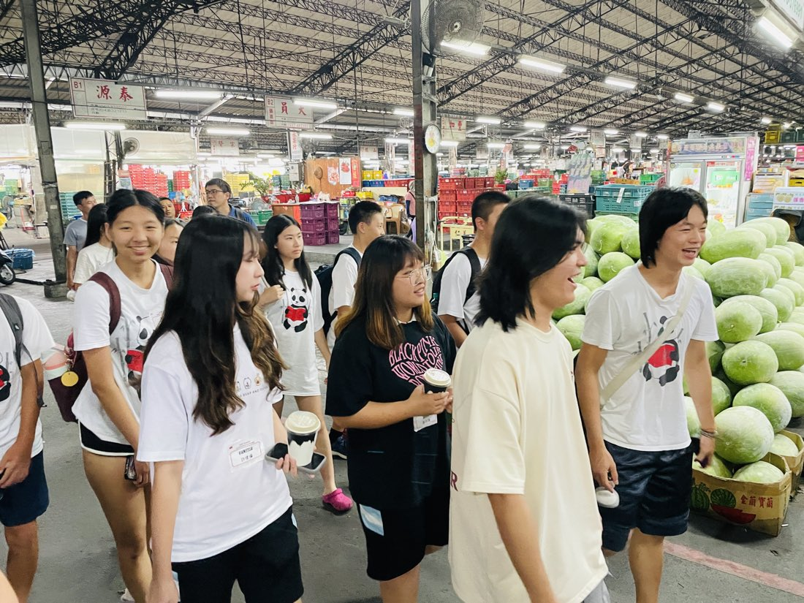
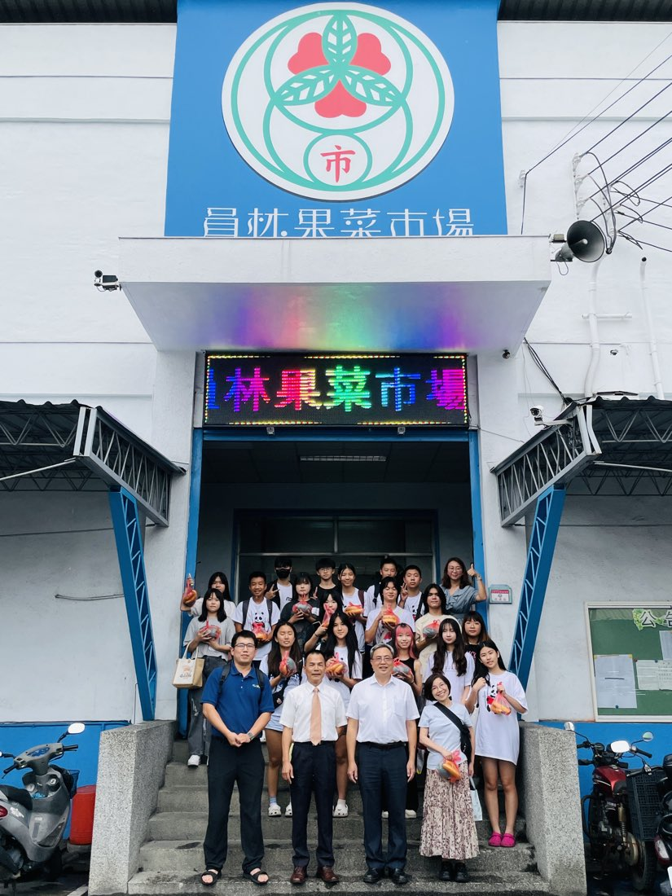
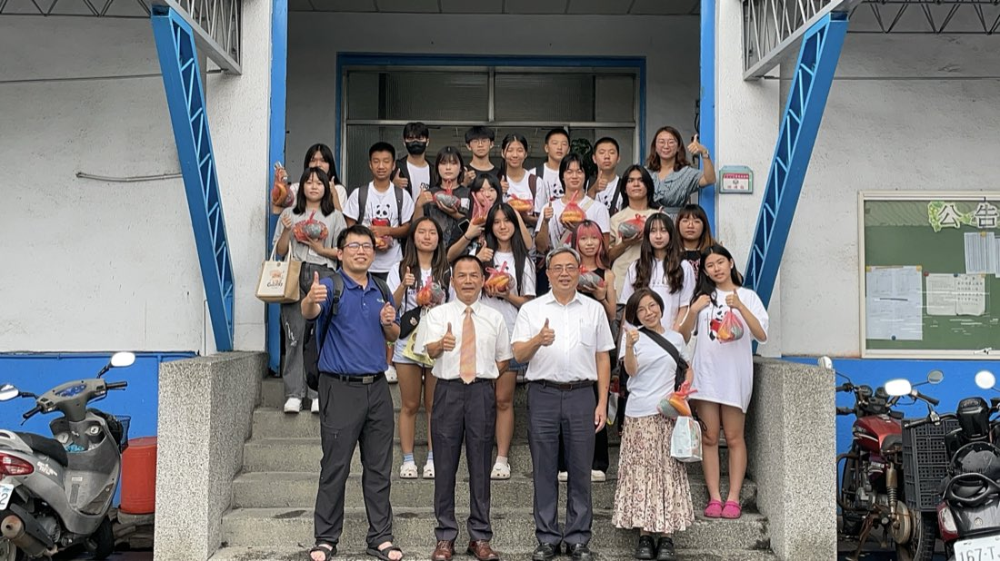
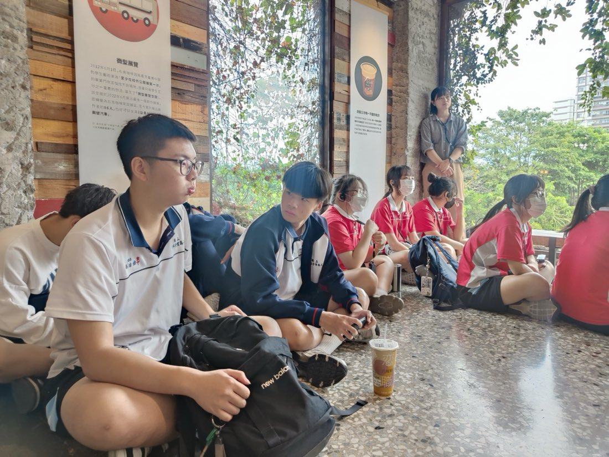
💡 幾個小訣竅，準備起來其實很輕鬆
- 導覽學生只要先試講一次、把路線走過一遍，臨場就穩了。
- 借一組導覽耳機，戶外收音立刻改善、大家聽得更清楚。
- 路線以火車站為中心就好，集中又好集合，很省事。